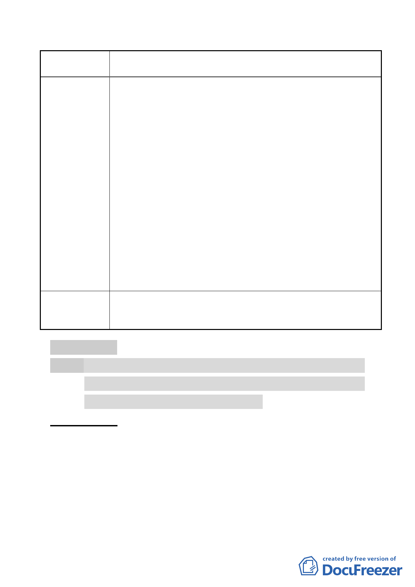

案名
委員會
決議
變更臺北市內湖區石潭段四小段 280、281、281-1 地號等三筆
土地國中、國小用地為體育場用地及道路用地主要計畫案
同，更為多元化。此外，本基地主場館興建後，除可提供各
類運動賽事、藝文展演及周邊居民運動需求使用外，在後續
設施營運效益上，配合民間資源進行運動設備經營管理，必
能提供更多元的運動空間與豐富內涵。
2. 本案基地永久性配置西側臨民權東路六段 206 巷側，依照都
市設計退縮 4 公尺留設開放空間外，基地內另退縮 15 公尺
留設帶狀開放空間，內部則設置 12 面戶外球場及中央球場、
第一球場等共 14 面球場。另依照 FISU 世大運相關球場規範
所設置，需 20 面球場方可符合賽事要求，故賽會期間將於
基地內退縮 15 公尺帶狀式開放空間臨時設置 6 面球場以為
因應，賽事完畢後，臨時性設施即拆除，將回復為開放空間
使用。
3. 有關動線調整部分，已修正計畫書內容，規範臨民權東路六
段 206 巷破口最多一處，並將體育場用地所產生之交通需求
完全內部化。
4. 問卷調查部分，請參見陳情編號 5（第 1 次陳情）。相關公聽
會與討論會議部分，請參見陳情編號 5。
1.同編號 1 陳情意見委員會決議。
2.所提有關問卷調查或公聽會訊息通知事宜，非屬都市計畫審
議範疇，另請市府相關單位妥予處理。
肆、研議事項
案名：本市「松山區西松段三小段 156 地號（原京華城）都市計
畫變更涉基準容積率認定及住宅使用比例」提本市都市計
畫委員會研議 1 案，續提大會研議。
案情概要說明：
一、 京華城案址原為唐榮鐵工廠舊址，於80年公告變更為第三種
商業區，並限作公眾服務空間、國際購物中心、國際觀光旅
館、辦公大樓、文化休閒設施、停車場等6大項使用，容積
率依本會決議（略以）：「本案應捐地30％規劃設計為公園、
廣場之用…容積率依整個基地面積計算為392％（70％×560
％）…」。
- 35 -